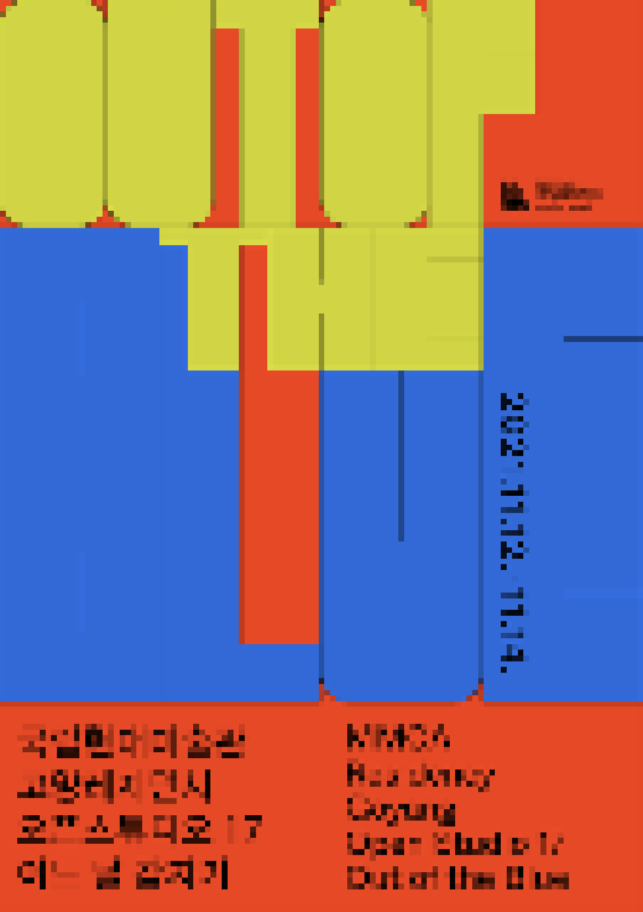

> title
오픈스튜디오 17 어느 날 갑자기
> content
어느날 갑자기 우리에게 찾아온 불청객 같은 코로나19는 우리의 일상생활에 많은 변화를 야기시켰다. 그리고 사람들에게는 사회적 거리두기와 동시에 높은 수준의 공동체 의식이 요구되었다. 2021년
고양레지던시 국내외
입주작가 15인은 전세계가 직면한 위기의 시대에 레지던시에서 보낸 각자의 시간을 오픈스튜디오를 통해 공유한다. 아티스트 레지던시는 사회적 거리두기가 강행됨에 따라 문화예술계 안에서도 가장 영향을
많이 받은 곳 중에
하나이며, 국내외 작가가 오가며 문화교류가 이루어지는 레지던시의 특성상 대부분의 프로그램들이 취소 혹은 연기되어야만 했다. 레지던시 작가들은 한 해를 같은 공간에서 생활하는 입주작가로서의
공동체로 함께였지만, 사회적
거리두기로 인해 그 안에서도 장시간 개인적인 시간을 보냈다. 이번 오픈스튜디오는 김방주외 국내입주작가 13인과 독일 에어프랑크푸르트(AIR Frankfurt)를 통해 시범적으로 원거리 레지던시
프로그램에 참여한
아티스틱 듀오 알라팝 & 발렌틴 올러스 팀이 함께한다. 그 외 연계 프로젝트로는 1층 복도 창문을 이용한 스테인글라스 프로젝트 듀킴의 , 2층 테라스에 설치되는 외부 프로젝트 추미림의 <경로>,
스튜디오 17호에선
입주기간동안 9명의 입주작가가 참여한 협업프로젝트 <스튜디오 요하네스>가 공개된다. 박윤주(고양 17기)의 기획으로 입주 기간 동안 진행된 장기 프로젝트로, 팬데믹으로 인해 2021년
해외 교환 입주가 취소
된 독일작가 요하네스 후고 스톨(Johannes Hugo Stoll)과의 온라인 협업으로 이루어진다. 고양레지던시 주변 지역관계를 염두에 두고 그의 가상 스튜디오를
9명의 한국
작가가 자유롭게 변형하고
확장하며 완성해 나가는 프로젝트이다. 스튜디오 5호에서는 출신작가 목록, 출판, 영상 등 그 간의 역사를 한눈에 볼 수 있는 고양레지던시 아카이브실을 운영한다.
이번해 고양레지던시 작가들이 선보일 《2021 고양레지던시 오픈스튜디오17: 어느날 갑자기》는‘팬데믹 시대 레지던시 작가들은 어떤 창작 활동을 하는가’라는 질문에
대한 고양레지던시 작가들의 답변이다.
팬데믹이 아티스트들을 얼마나 바꾸어 놓았는지가 아닌 자신의 작업을 변함없이 이어나가고 있음에 대한 전시이며, 모두가 각자의 자리에서 그 삶을 영유하듯 예술가들은 자신들만의 작업을
지속하고 있다.
국립현대미술관 고양레지던시는 혼란한 시기에도 각자의 자리에서 창작활동을 묵묵히 해나가고 있는 작가 15인의 작품을 이번 오픈스튜디오를 통해 공개하려고 한다.
